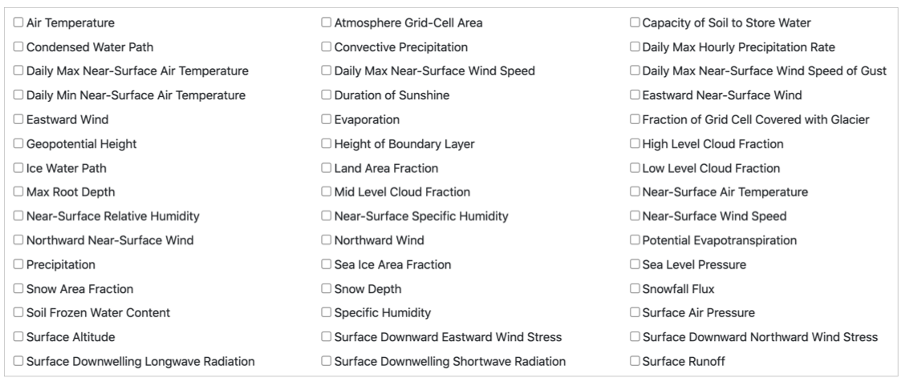

Select a specific time period for your data. For example, you can select 20/05/1999 for the start date and select 10/06/2000 in the end of date. The selection means the data includes variable information between 20th May 1999 to 10th June 2000. If you want to get just one day climate data, you can select the same day which you wanted for both start date and end date.

Time resolution is where the climate futures data is collected by real world stations,and they may record data every hour, every day, every month etc. It helps filter those data according to your needs.

There are hundreds of the variables in the variable list, each variable presents a kind of climate data. You can click the cycle which following the variable name to select the variables for your data set.
